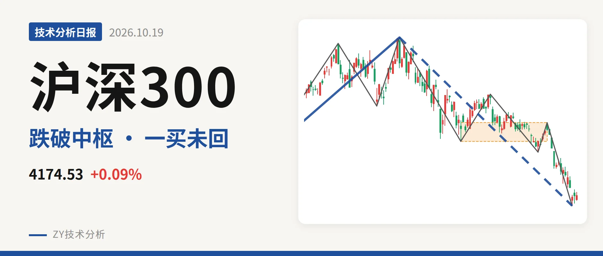

沪深300｜跌破4478点中枢下沿，下跌未见背驰

最近日线中枢 4478.21—4583.38点，收盘位于中枢之下
一句话：跌破4478点中枢下沿，下跌绿柱放大，未见背驰
📉 走势结构：更大级别上涨未改，日线下跌段延续
更大级别仍属于2024年2月2日以来的上涨段结构，但日线线段已经转入6月23日以来的下跌段。2021年2月18日至2024年2月2日的下跌段从5930.91点到3108.35点，已经结束；之后上涨段从3108.35点到5064.27点，上涨约63%，尚未走完。但6月23日至10月15日的下跌段还在延续，最新收盘4174.53点仍在该下跌段内。日线线段这一段下跌从5064.27点到4115.07点，跌18.7%，内含5笔，没有结束信号。

📍 中枢与位置：价格跌破最近中枢下沿，中枢下移
日线笔中枢7月30日至9月22日区间为4478.21—4583.38点，尚未完成。最新收盘4174.53点低于下沿4478.21点约6.8%。该中枢相比2月3日至3月17日的4578.21—4720.86点，下沿、上沿都降低，属于中枢下移。10月16日以来最高仅4206.89点，连下沿也未反抽到。价格虽处在更早的2024年10月8日至2025年5月30日中枢3812.32—4200.91点内部，但离上沿4200.91点只差26点，已跌破最近的笔中枢下沿。
🔻 买卖点：10月15日一买暂未被破坏，反弹未回中枢
日线笔级别上，10月15日出现一买，位置4115.07点，对应9月22日至10月15日的下跌笔。该笔已经结束，10月16日至19日最低4127.94点，没有跌破4115.07点，一买暂未被破坏。但反弹最高4206.89点，仍未回到最近中枢下沿。若后续跌破4115点，这一买只对应更小级别。上方1月13日一卖、2月25日二卖、3月17日类二卖一个比一个低，也说明下跌段在逐步压低。

⚡ 背驰：同向下跌笔未见新低不新弱，下跌力度未减
比较8月18日至9月16日与9月22日至10月15日两段日线下跌笔：价格从4417.60点下移到4115.07点，创了新低；绿柱面积由103扩大到274，DIF低点由-44.8降到-92.6。价格新低、绿柱放大、DIF同步新低，不是新低不新弱，反而是下跌力度还在增强。因此10月15日一买之后不能从日线笔背驰获得反转依据，下跌段仍缺一个减速过程。最新DIF为-100.3，仍在零轴下方。
🧭 关键位置观察：反抽不过4478点构成三卖，站回4583点才转震荡
后续反弹若成笔且回不到4478点附近上方，结构上构成日线三卖。重新站上4583点附近，则下跌段更可能只是中枢扩展，而非趋势性下行。下方结构参考2024年10月8日至2025年5月30日中枢下沿3812点附近，若回落不破该位，仍处于更大中枢内。当前结构以中枢下方的下跌段延续看待，还不是中性震荡结构。
⚠️ 本文为基于公开行情数据的缠论技术结构记录，由程序自动计算并生成，仅供学习交流，不构成任何投资建议。市场有风险，投资需谨慎。